What should I bring to a consultation?
A short symptom timeline, current medicines, recent reports and the questions you do not want to forget.
Two practices. One trusted place for the people you care about — from everyday family medicine and diabetes care to confident, comfortable smiles.
We believe great care is more than treating a symptom. It is taking time to understand the person, explaining what comes next, and making every visit feel a little easier.
Less rushing. More listening. Clearer next steps.
Care that makes sense outside the clinic too.
Focused care experiences built around real people, not just appointments.
Everyday consultations, preventive health and thoughtful diabetes management with Dr. Harshal Patil.

Modern dental and cosmetic care designed around comfort, clarity and your goals.
We keep the experience clear: understand what is happening, know your options, and leave with a next step that makes sense.
Simple starting points for better conversations with your healthcare team.
A short symptom timeline, current medicines, recent reports and the questions you do not want to forget.
Long-term care is easier to understand when meals, movement, medicines and monitoring become repeatable habits.
Do not wait to know the treatment. Start with a concern, a change or simply the wish to understand your dental health.
You do not need the perfect words or a diagnosis before reaching out. Choose the care pathway that fits what you need today.
Small pieces of health and smile trivia to make the SHREEYAN journey a little more interesting.
Tooth enamel is the hardest tissue in the human body — which is one reason protecting it matters.
Saliva helps with chewing, swallowing and the first steps of digestion, while also helping keep the mouth comfortable.
The little things you can repeat — meals, movement, brushing, sleep and follow-ups — are often easier to keep than dramatic resets.
Noticing a change and writing it down can make a conversation with your doctor or dentist much more useful.
What you notice between appointments can be just as useful as what happens inside them. Keep a note, ask when you're unsure, and make the next step easy to find.
Better · Same · Different · Not sure
Recently · A while ago · Can't remember
Symptoms · Prevention · Routine · Smile care
Understanding what is usual for you can make it easier to notice meaningful changes.
Bring questions, observations and concerns to your next appointment. You don't need perfect words.
A clear follow-up plan turns a good appointment into a more connected care journey.
SHREEYAN brings medical and dental care under one connected identity — with an emphasis on clarity, continuity and the person behind the appointment.